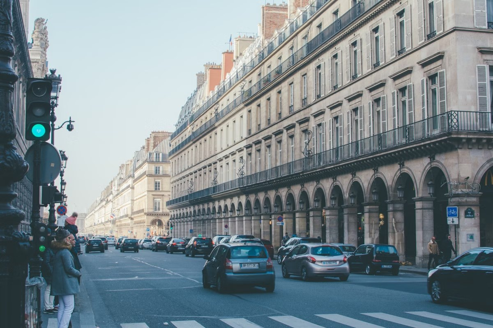
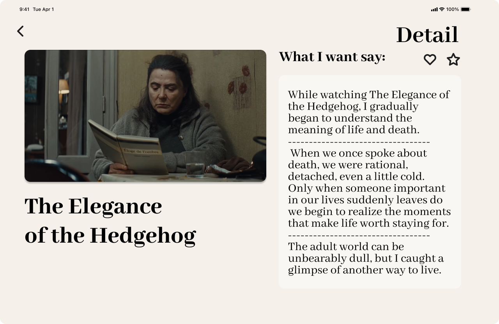
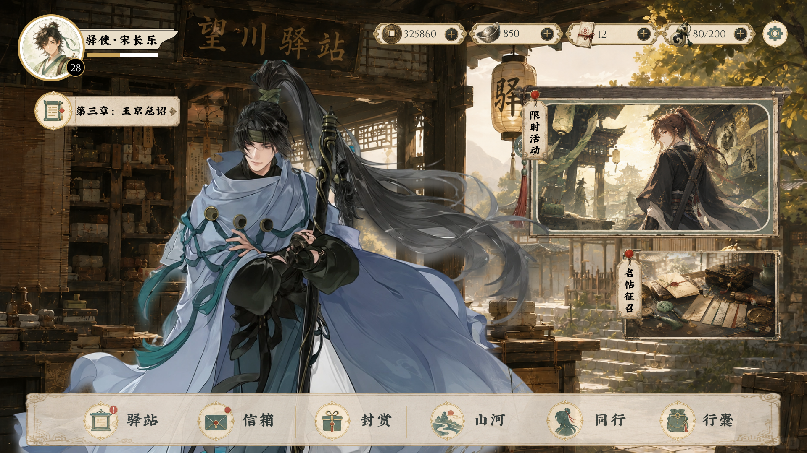
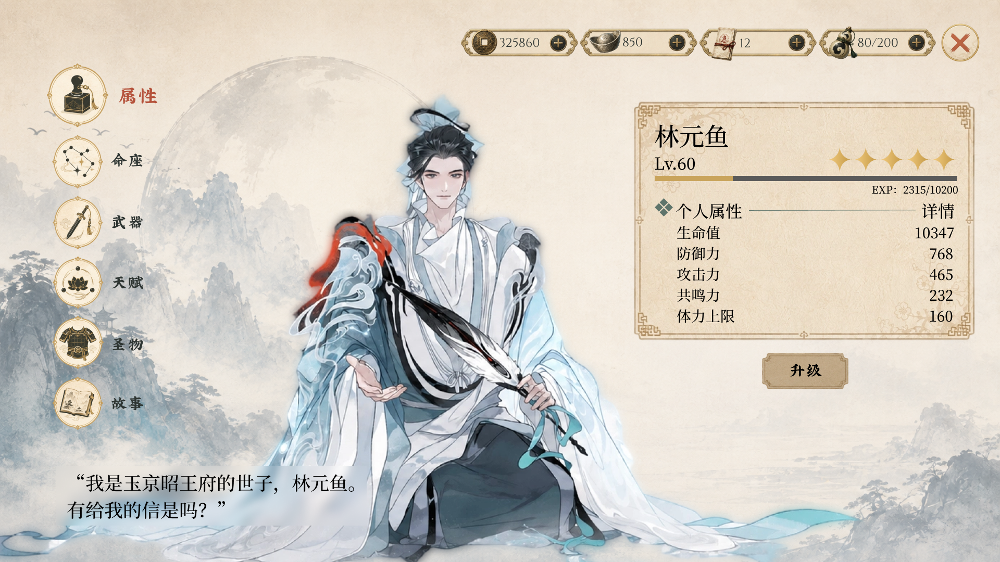
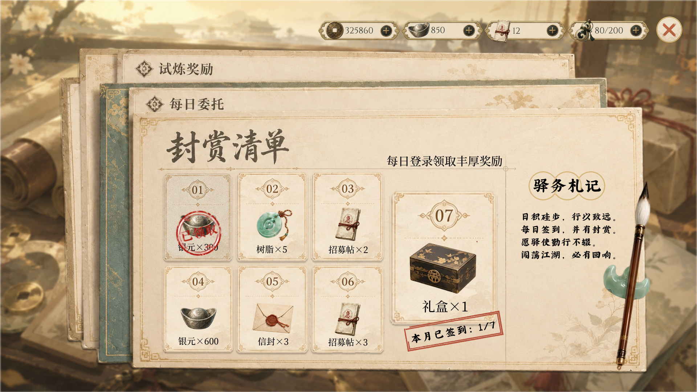
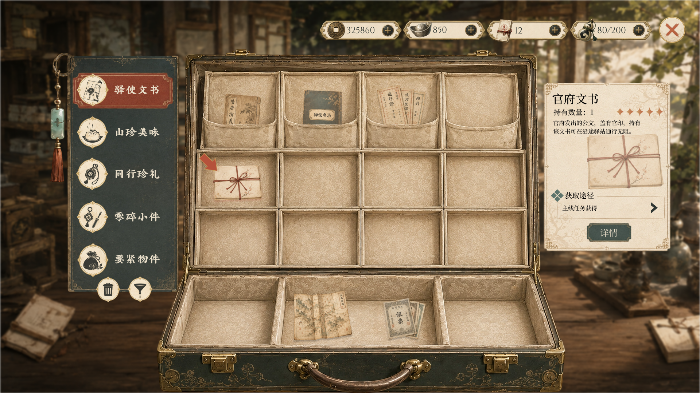
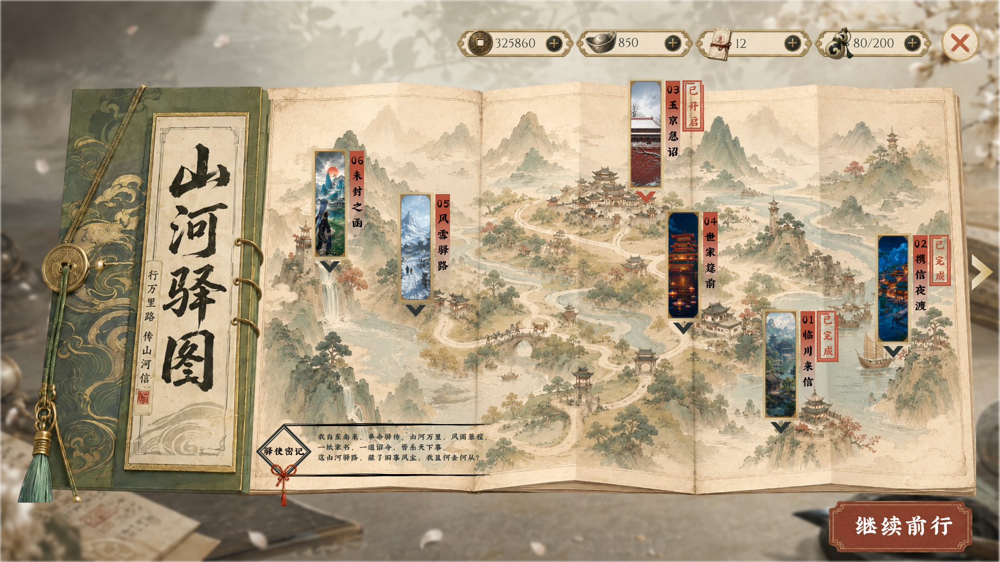
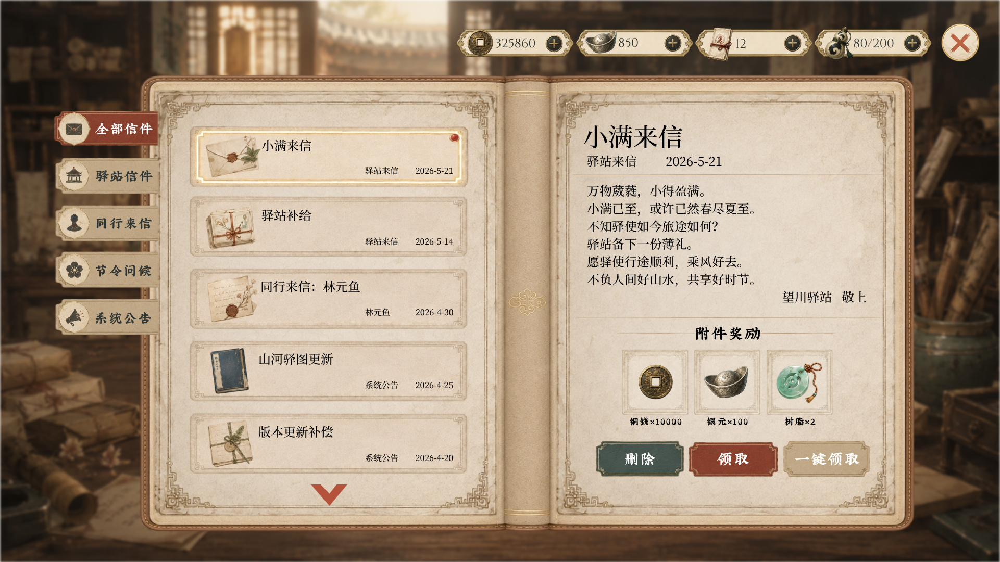
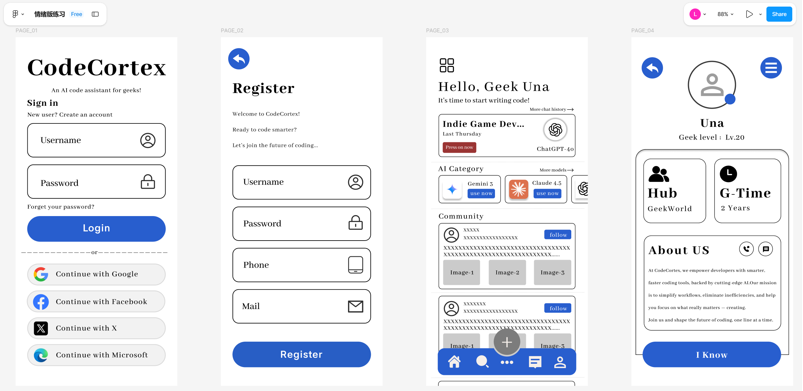

← RETURN TO CONCOURSE
● SELECT YOUR ROUTE
今日发车 / Departures
选择一个方向，查看对应的设计档案。
TIME
DESTINATION / 去往方向
VIA / 内容
PLATFORM
STATUS
NOW
ABOUT ME
关于我
PROFILE · SKILLS · CONTACT
01
↗
10:24
SMALL STOPS
细碎创意
DAILY STUDIES · FIGMA · UI
02
↗
13:17
THE FORKING PATH
分叉路
3 MAJOR PROJECTS · CASE STUDIES
03
↗
← RETURN TO CONCOURSE
PLATFORM 01 · PASSENGER ARCHIVE
PassengerProfile
旅客档案 / DESIGN TRAVELER RECORD
DESIGN STATION ID
VALID · 2026
VL
PASSENGER
PASSENGER PROFILE
VouLinR
数字媒体技术专业学生
FOCUS UI Design / Visual Design / Game Interface
STATUS Ideas in transit · Always observing
DESIGN DECLARATION
我喜欢把界面设计成一个可以进入的空间。
DS · VOULINR · 001
01
DESTINATION TAGS
技能行李 / Skills On Board
Figma UI Design Game UI Visual Design
Interaction Prototype Poster Design HTML / CSS AIGC Assisted Design
01 观察需求 OBSERVE 02 确定风格 DEFINE 03 搭建信息结构 STRUCTURE 04 设计页面视觉 VISUALIZE 05 制作交互动效 INTERACT 06 整合展示作品 ARRIVE
← RETURN TO DEPARTURES
● TRANSFER HALL · PLATFORM 03
分叉路THE FORKING PATH
本次列车在此分为三条支线。
01

PLATFORM A · MOBILE UI
MICHELIN
预约 · 推荐 · 品牌体验
BOARD ↗
02

PLATFORM B · RESPONSIVE UI
IM
书影音 · 多端适配 · 个人记录
BOARD ↗
03

PLATFORM C · GAME UI
长驿行
古风架空 · 驿站叙事 · 视觉系统
BOARD ↗
MAIN LINE PROJECT 01 PROJECT 02 PROJECT 03
← TRANSFER HALL
PROJECT 01 / 03
NEXT PROJECT →
01 · MOBILE APP UI
Michelin
移动端餐厅预约 / 美食推荐 APP
以米其林餐厅体验为核心，将餐厅探索、菜品选择、席位预约与订单流程
收拢进一个具有高级品牌质感的移动端产品。
高级感 餐厅筛选 预约流程 品牌质感
VIEW PROTOTYPE ↗
左侧原型可直接点击与滚动
KEY SCREENS / 重点页面
从抵达餐厅，到完成预约。
DESIGN FOCUS
01 通过深色材质与高对比强调高级餐饮的仪式感。
02 把复杂预约信息拆成可确认、可返回的连续步骤。
03 让菜品图像、价格和操作入口维持清晰的信息层级。
← TRANSFER HALL
PROJECT 02 / 03
NEXT PROJECT →
02 · RESPONSIVE EXPERIENCE
IMREADING
一个温柔的书影音分享平台。阅读、观看与记录不再是孤立动作，
PROJECT POSITIONING
书、电影与日常记录，
设计重点 多端适配、内容浏览、阅读氛围、情绪表达
视觉关键词 温柔、书架、胶片、个人记录
适配范围 Mobile / Tablet / Desktop
← TRANSFER HALL
PROJECT 03 / 03
NEXT PROJECT →
03 · GAME UI VISUAL SYSTEM
长驿行
WAYFARER POST
架空古风 × 少量西式邮政元素
WORLD VIEW / 世界观
山河未乱，
玩家作为边城驿站的普通驿使，在投递书信、公文与货契的路途中，
被卷入朝堂、世家、江湖与商路的暗流。视觉系统以木质驿站、
旧档案、邮票边框和朱砂印章建立统一叙事。
UI ATLAS / 页面总览
六个系统页面，一套完整的驿站视觉语言。
01 / 驿站主界面 
02 / 驿使名录 
03 / 封赏清单 
04 / 驿使行囊 
05 / 山河驿图 
06 / 往生来信
COLOR
ELEMENTS 信封 · 火漆 · 邮票边框 · 徽章 · 票券 · 档案纸
TYPOGRAPHY 宋体标题 × 黑体正文 × Cinzel 数字装饰
← RETURN TO DEPARTURES
PLATFORM 02 · LIGHT ARCHIVE
从色彩、排版到微交互，这里收录课程中的阶段练习。每一次短暂停靠，都为下一段设计旅程积累新的判断。
All
UI
Visual
Interaction
Graphic
PLATFORM 02 / NOTICE BOARD
06 FILES ON DISPLAY

CodeCortex · AI 代码助手
UI · VISUAL
从情绪图出发，建立清新的极客代码助手视觉。
View Detail
页面交互
INTERACTION
第一次让静态页面真正对点击产生回应。
View Detail
cart动效
MOTION
用连续状态表现一次明确的加入操作。
View Detail
笔迹书写动效
MOTION · GRAPHIC
一支笔沿路径移动，留下逐渐生长的字迹。
View Detail
点餐履约流程 UI · INTERACTION 从下单到送达，用动态状态讲清订单进程。 View Detail
点餐APP交互 UI · INTERACTION 同一界面，三种不同的动效与交互表达。 View Detail
Design Station 你在这里
About Me 01 / 本人线
Small Stops 02 / 平时作业
分叉路 03 / 作品线